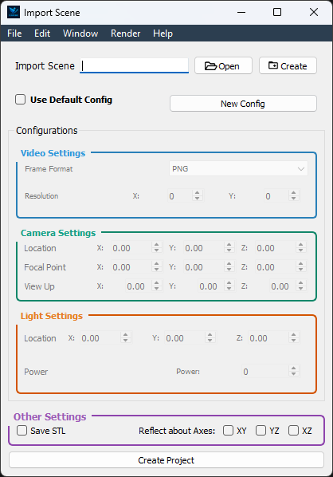
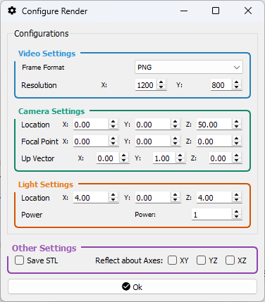

Render Settings Window¶
The Render Settings Window allows you to configure all rendering parameters, including video output, camera setup, lighting, STL export, and reflection settings.
You can access it in two contexts:
Window |
Description |
Preview |
|---|---|---|
Project Creator |
Accessed during new project creation. Set up all render options before project initialization. |
 |
Project Editor |
Accessed via Render → Configure Render. Modify settings for an existing project without restarting. |
 |
{kind=link}
{kind=link}
—
Video Settings¶
Frame Format: Choose the image format for each rendered frame (e.g., PNG, JPEG).
Resolution: Specify the output dimensions of each frame in width × height (pixels).
—
Camera Settings¶
Location: Set the camera’s position in the global coordinate space (X, Y, Z).
Rotation: Define the camera’s orientation using rotation angles around the X, Y, and Z axes.
—
Light Settings¶
Position: Specify the position of the scene light source in X, Y, and Z.
Power: Control the intensity (brightness) of the light illuminating the scene.
—
Other Options¶
STL Export: Enable Save STL per Frame to export geometry at each frame—useful for CFD workflows and mesh-based post-processing.
Reflection Plane: Mirror the rendered geometry across a selected plane (XY, YZ, or XZ). This is particularly useful for simulating symmetrical wing pairs without duplicating sprite definitions.
—